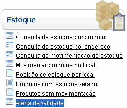
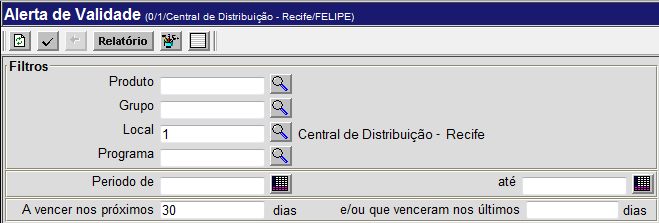
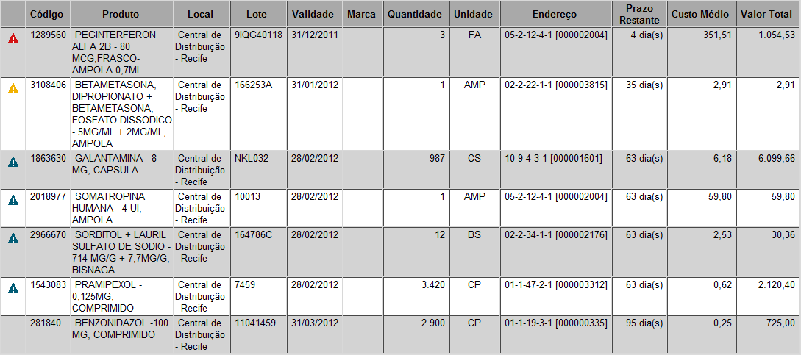

Alerta de Validade [ Voltar ]Esta tela permite a consulta de produtos cujo prazo de validade já venceu ou está prestes a vencer. O usuário pode realizar a consulta para um determinado produto, um grupo ou para todos os produtos em estoque. O formulário "Alerta de Validade " encontra-se dentro do menu "Estoque". 
Ao clicar no menu "Alerta de Validade", o sistema exibirá a seguinte tela: 
Para gerar a listagem de produtos do alerta de validade, siga os passos abaixo: 1º Passo: especifique o produto ou grupo de produtos que deseja consultar. Clique no botão  [Procurar]
ao lado dos campos "Produto"
ou "Grupo"
para selecionar o produto ou grupo
a partir de uma lista de produtos e grupos cadastrados. Se estes dois
campos forem deixados em branco, a pesquisa incluirá todos os produtos
em estoque. [Procurar]
ao lado dos campos "Produto"
ou "Grupo"
para selecionar o produto ou grupo
a partir de uma lista de produtos e grupos cadastrados. Se estes dois
campos forem deixados em branco, a pesquisa incluirá todos os produtos
em estoque.2° Passo: determine o período de abrangência para a consulta.
3º Passo: clique no botão 
Análise dos resultados No exemplo acima, a pesquisa teve a inteção de incluir produtos vencidos e por vencer. Os produtos já vencidos são exibidos primeiro, em bege e por ordem da data de vencimento. Em seguida, são exibidos os produtos por vencer. Os seguintes símbolos são utilizados para facilitar o entendimento dos resultados:
Para produtos vencendo em um prazo maior que 90 dias, nenhum símbolo é utillizado. |
 Produtos que vencerão nos próximos 30 dias;
Produtos que vencerão nos próximos 30 dias; Produtos que vencerão entre 31 e 60 dias; e
Produtos que vencerão entre 31 e 60 dias; e Produtos que vencerão entre 61 e 90 dias.
Produtos que vencerão entre 61 e 90 dias.